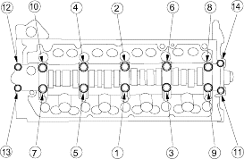
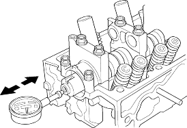
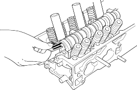

NOTE:
- Do not rotate the camshaft during inspection.
- Remove the rocker arms and rocker shafts.
- Put the camshaft and the camshaft holders on the cylinder head, then tighten the bolts to the specified torque.
Specified torque:
8 mm bolts:20 Nm (2.0 kgf/m, 14 lbf/ft)
Apply engine oil to the bolt threads.
6 mm bolts:12 Nm (1.2 kgf/m, 8.7 lbf/ft)
Apply engine oil to the bolt threads.
6 mm bolts:(11), (12), (13), (14)

- Seat the camshaft by pushing it away from the camshaft pulley end of the cylinder head.
- Zero the dial indicator against the end of the camshaft, then push the camshaft back and forth and read the end play.
Camshaft End Play:
Standard (New):0.05 - 0.15 mm
(0.002 - 0.006 in.)
Service Limit:0.5 mm (0.02 in.)

- Unscrew the camshaft holder bolts 2 turns at a time, in a criss-cross pattern. Then remove the camshaft holders from the cylinder head.
- Lift the camshaft out of the cylinder head, wipe them clean, then inspect the lift ramps. Replace the camshaft if any lobes are pitted, scored, or excessively worn.
- Clean the camshaft journal surfaces in the cylinder head, then set the camshaft back in place. Place a plastigage strip across each journal.
- Install the camshaft holders, then tighten the bolts to the specified torque as shown in step 1.
- Remove the camshaft holders. Measure the widest portion of plastigage on each journal.
- If the camshaft-to-holder clearance is within limits, go to step 10.
- If the camshaft-to-holder clearance is beyond the service limit and the camshaft has been replaced, replace the cylinder head.
- If the camshaft-to-holder clearance is beyond the service limit and the camshaft has not been replaced, go to step 9.
Camshaft-to-Holder Oil Clearance:
Standard (New):0.050 - 0.089 mm
(0.0020 - 0.0035 in.)
Service Limit:0.15 mm (0.006 in.)
